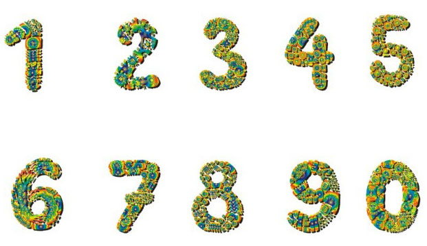

头像上传

X
px
Y
px
Width
px
Height
px
Rotate
deg
Get Cropped Canvas
160 × 90
320 × 180
×
Cropped
Get Data
Get Image Data
Get Canvas Data
Set Canvas Data
Get Crop Box Data
Set Crop Box Data
16:9
4:3
1:1
2:3
Free
Toggle Options
strict
responsive
checkImageOrigin
modal
guides
highlight
background
autoCrop
dragCrop
movable
resizable
rotatable
zoomable
touchDragZoom
mouseWheelZoom